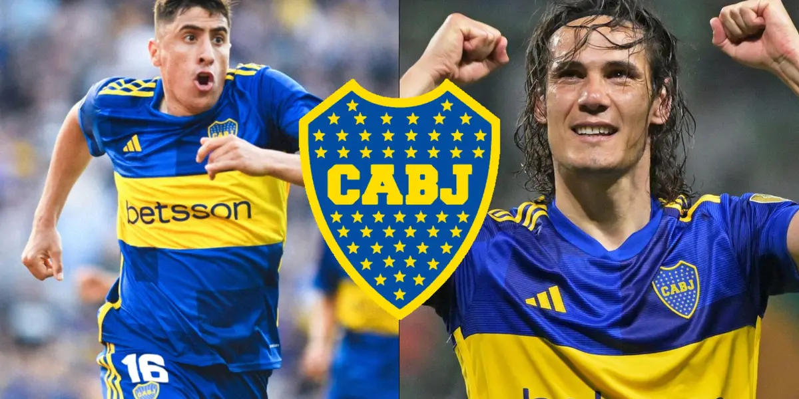

Boca se lo dio vuelta a River en el Estadio Mario Alberto Kempes y se quedó con el Superclásico por 3-2, correspondiente a los cuartos de final de la Copa de la Liga Profesional. El Millonario comenzó ganando por Miguel Borja, pero el Xeneize lo remontó gracias al doblete de Miguel Merentiel y el tanto de Edinson Cavani. Descontó Paulo Díaz sobre el final. En la semifinal espera Estudiantes, que goleó a Barracas Central. El equipo de Martín Demichelis arrancó mejor en el partido y en apenas diez minutos rompió el cero en el marcador. Nacho Fernández la tocó para Claudio Echeverri, que agarró mal parado a la defensa rival, encaró y la tocó para Miguel Borja, que aprovechó una mala salida de Sergio Romero y abrió el marcador. El Xeneize se fue a la cancha con la ventaja y en el 11'
Solo cinco minutos más tarde, Merentiel encabezó un contragolpe, la tocó para Edinson Cavani, que quiso definir pero achicó bárbaro Franco Armani, aunque el rebote le quedó a la Bestia, que la empujó y liquidó el partido.